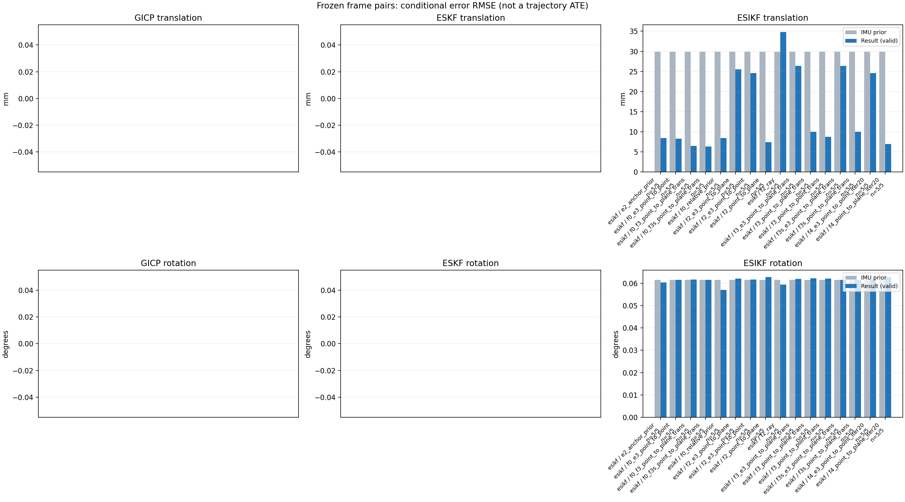

20261015_113028_roll_right · depth=disparity_cache · cache=f5a9d2b5fed051810fe4
模型视差：/home/ubuntu22/slam/SIO_SLAM/models/tensorrt/disp_896x448_fp16.plan；engine SHA256=604cf6ac1f705c877260711730dd5d2d58c2a21f3020c03c668401ef7fb1e768。输入为生产裁剪与光照处理后的 RGB 0..255；此实验使用原始浮点像素视差，不应用完整前端的邻域视差后处理。
原始 ONNX SHA256：e9f49736a65d68d06681add463866b6defdf78fdd7f4f50f6cc941b682fdc0bc。
代价体图改写验证：ONNX Runtime 固定随机特征输入，最大绝对误差 0；该项检查图改写，完整模型精度仍需由录制数据评估。
配准代码版本：744ac2d993ae629b0cc44a3b1d995e04ab4fad48；观测生成版本：744ac2d993ae629b0cc44a3b1d995e04ab4fad48。
固定图像对与纯 IMU 先验；ESKF 回放固定 GICP 观测，ESIKF 直接读取点云。真值只用于此报告。
同时查看 converged 与 solver_status：上游默认 Stereo 在 max_iter / stopped_at_minimum 时也可能置 converged=true。valid 表示输入检查通过，不表示精度提升。欧氏 GICP 未提供独立的点距 RMSE，该列显示 NaN。
误差按每对图像的锚点计算，单位 m / degrees。此处 RMSE 不是全序列 ATE；末帧受同一锚点条件约束。NIS 与条件马氏距离是诊断量，少量相关图像对不能用于宣称协方差已校准。
全部指标 CSV · R / P 矩阵 CSV · Stereo 求解逐轮 CSV · ESIKF 逐轮轨迹 CSV · 末轮 H / R / K_pose 矩阵 CSV · 配置快照 · 矢量图
unflagged 排除纯惯性先验平移误差超过 50 mm 的图像对；whitened 为误差按协方差白化后的每自由度均值，协方差与实际误差相符时约为 1。prior_whitened 用真值误差只检验先验 P；NIS 为 ESIKF 首轮 rᵀ(P+R)⁻¹r，不用真值，检验的是 P+R 的总量，单靠它分不开 P 与 R，偏差、错误对应和线性化误差也会抬高它。观测方差超过先验方差 1e+04 倍的方向视为不可观，从 NIS 及其自由度中去掉（nis_dof）。一致时 nis_per_dof 均值约 1、nis_over_chi2_median 中位数约 1；帧对少且共享序列，超出 95% 分位的比例只作参考。每轮重新关联时首轮只走到观测的一部分，nis 会偏小；nis_final 用最后一轮线性化点的创新 r_v + e_j，应以它为准。
| stage | method | variant | valid | total | result_translation_rmse_m | result_rotation_rmse_deg | result_translation_median_m | result_rotation_median_deg | result_translation_rmse_unflagged_m | result_rotation_rmse_unflagged_deg | improved_translation | improved_rotation | posterior_whitened_by_P_rot_mean | posterior_whitened_by_P_trans_mean | prior_whitened_by_P_rot_mean | prior_whitened_by_P_trans_mean | nis_per_dof_mean | nis_over_chi2_median_median | nis_exceeds_chi2_95_fraction | nis_final_per_dof_mean | nis_final_over_chi2_median_median | nis_final_exceeds_chi2_95_fraction |
|---|---|---|---|---|---|---|---|---|---|---|---|---|---|---|---|---|---|---|---|---|---|---|
| esikf | esikf | e2_anchor_prior | 5 | 5 | 0.0084543 | 0.060367 | 0.003409 | 0.013931 | 0.0074694 | 0.067444 | 3 | 3 | 367.03 | 254.81 | 303.43 | 25.482 | 30.845 | 4.9713 | 0.8 | 17.582 | 4.8947 | 0.8 |
| esikf | esikf | f0_e3_point_to_point | 5 | 5 | 0.0082514 | 0.061563 | 0.0033905 | 0.013561 | 0.0068552 | 0.068795 | 4 | 4 | 209.02 | 3.2653 | 206.93 | 1.6088 | 0.33675 | 0.03813 | 0 | 0.80884 | 0.023716 | 0.2 |
| esikf | esikf | f0_f3_point_to_plane_trans | 5 | 5 | 0.0065121 | 0.061605 | 0.0038692 | 0.013572 | 0.0053852 | 0.068841 | 2 | 3 | 209 | 19.876 | 206.93 | 1.6088 | 1.5572 | 0.03588 | 0.2 | 1.7932 | 0.1849 | 0.2 |
| esikf | esikf | f0_f3s_point_to_plane_trans | 5 | 5 | 0.0063429 | 0.061593 | 0.0040888 | 0.013562 | 0.0054266 | 0.068826 | 2 | 0 | 206.93 | 19.088 | 206.93 | 1.6088 | 1.5572 | 0.03588 | 0.2 | 1.803 | 0.20067 | 0.2 |
| esikf | esikf | f0_relative_prior | 5 | 5 | 0.0084436 | 0.056982 | 0.0036157 | 0.0135 | 0.0076692 | 0.063662 | 2 | 4 | 212.66 | 199.09 | 206.93 | 1.6088 | 29.954 | 4.4007 | 0.8 | 9.1919 | 4.6295 | 0.8 |
| esikf | esikf | f2_e3_point_to_plane | 5 | 5 | 0.025517 | 0.062034 | 0.0025954 | 0.013559 | 0.0057131 | 0.069336 | 5 | 3 | 319.17 | 26.117 | 303.43 | 25.482 | 2.1898 | 0.075144 | 0.2 | 3.0569 | 0.075144 | 0.2 |
| esikf | esikf | f2_e3_point_to_point | 5 | 5 | 0.024575 | 0.061693 | 0.0026341 | 0.013563 | 0.0076553 | 0.068948 | 4 | 2 | 326.42 | 31.042 | 303.43 | 25.482 | 0.76517 | 0.018935 | 0.2 | 2.0353 | 0.018935 | 0.2 |
| esikf | esikf | f2_point_to_plane | 5 | 5 | 0.0074212 | 0.062721 | 0.0024038 | 0.013507 | 0.0032869 | 0.070096 | 3 | 3 | 351.29 | 28.457 | 303.43 | 25.482 | 9.2041 | 3.1421 | 0.6 | 12.774 | 3.0567 | 0.6 |
| esikf | esikf | f2_ray | 5 | 5 | 0.034827 | 0.059429 | 0.0027132 | 0.013391 | 0.025958 | 0.066437 | 1 | 5 | 327.93 | 250.71 | 303.43 | 25.482 | 8.919 | 2.5802 | 0.4 | 8.3262 | 4.0515 | 0.6 |
| esikf | esikf | f3_e3_point_to_plane_trans | 5 | 5 | 0.026349 | 0.061943 | 0.0026192 | 0.013562 | 0.0063819 | 0.069233 | 4 | 4 | 318.89 | 26.69 | 303.43 | 25.482 | 2.9415 | 0.12433 | 0.2 | 3.408 | 0.12283 | 0.2 |
| esikf | esikf | f3_point_to_plane_trans | 5 | 5 | 0.010003 | 0.062257 | 0.0032928 | 0.013574 | 0.0046904 | 0.069591 | 3 | 3 | 345.39 | 50.991 | 303.43 | 25.482 | 8.085 | 2.3196 | 0.2 | 14.45 | 2.2673 | 0.2 |
| esikf | esikf | f3_point_to_point_trans | 5 | 5 | 0.0087524 | 0.062129 | 0.0034689 | 0.012503 | 0.0059631 | 0.069441 | 2 | 4 | 360.03 | 232.66 | 303.43 | 25.482 | 8.5173 | 0.55937 | 0.4 | 22.824 | 0.56396 | 0.4 |
| esikf | esikf | f3s_e3_point_to_plane_trans | 5 | 5 | 0.026408 | 0.061593 | 0.0026192 | 0.013562 | 0.0063705 | 0.068826 | 4 | 0 | 303.43 | 26.729 | 303.43 | 25.482 | 2.9415 | 0.12433 | 0.2 | 3.3952 | 0.12279 | 0.2 |
| esikf | esikf | f3s_point_to_plane_trans | 5 | 5 | 0.010018 | 0.061593 | 0.0032894 | 0.013562 | 0.0047587 | 0.068826 | 3 | 0 | 303.43 | 51.243 | 303.43 | 25.482 | 8.085 | 2.3196 | 0.2 | 14.391 | 2.2799 | 0.2 |
| esikf | esikf | f4_e3_point_to_point_iter20 | 5 | 5 | 0.024621 | 0.061692 | 0.0026341 | 0.013563 | 0.0076553 | 0.068948 | 4 | 2 | 326.39 | 31.542 | 303.43 | 25.482 | 0.76517 | 0.018935 | 0.2 | 1.9537 | 0.018935 | 0.2 |
| esikf | esikf | f4_point_to_plane_iter20 | 5 | 5 | 0.0069252 | 0.062741 | 0.0024038 | 0.013507 | 0.0032652 | 0.070111 | 3 | 3 | 351.6 | 22.726 | 303.43 | 25.482 | 9.2041 | 3.1421 | 0.6 | 13.484 | 3.0567 | 0.6 |

| stage | case | method | variant | status | solver_status | inliers | converged | covariance_convention | covariance_from_hessian | fitness | registration_rmse_m | prior_trans_error_m | result_trans_error_m | prior_rot_error_deg | result_rot_error_deg | prior_flagged | R_rot_trace_rad2 | R_pos_trace_m2 | nis_regularized | posterior_whitened_by_P_rot | posterior_whitened_by_P_trans | prior_whitened_by_P_rot | prior_whitened_by_P_trans | nis_per_dof | nis_dof | nis_final_per_dof | nis_final_dof |
|---|---|---|---|---|---|---|---|---|---|---|---|---|---|---|---|---|---|---|---|---|---|---|---|---|---|---|---|
| esikf | static_start | esikf | e2_anchor_prior | updated | converged | 9346 | 1 | 1 | 0 | 0 | 7.57e-05 | 9.1481e-05 | 0.0060904 | 0.0060821 | 0 | 1.4895e-07 | 8.9459e-07 | nan | 14.58 | 0.05814 | 14.428 | 0.021721 | 0.16077 | 6 | 0.16077 | 6 | |
| esikf | static_start | esikf | f0_relative_prior | updated | converged | 9346 | 1 | 1 | 0 | 0 | 7.57e-05 | 0.00017836 | 0.0060904 | 0.0060349 | 0 | 1.4895e-07 | 8.946e-07 | nan | 7.4742 | 0.090971 | 7.5109 | 0.00094734 | 0.13448 | 6 | 0.1338 | 6 | |
| esikf | static_start | esikf | f2_point_to_plane | updated | converged | 9346 | 1 | 1 | 0 | 0 | 7.57e-05 | 0.00017694 | 0.0060904 | 0.0061383 | 0 | 1.5387e-06 | 5.0021e-06 | nan | 14.669 | 0.13813 | 14.428 | 0.021721 | 1.4254 | 6 | 1.4315 | 6 | |
| esikf | static_start | esikf | f2_ray | updated | converged | 9346 | 1 | 1 | 0 | 0 | 7.57e-05 | 0.00012674 | 0.0060904 | 0.0060896 | 0 | 0.060255 | 6.9116e-05 | nan | 14.424 | 0.06865 | 14.428 | 0.021721 | 2.0349 | 3 | 2.0361 | 3 | |
| esikf | static_start | esikf | f3_point_to_point_trans | updated | converged | 9346 | 1 | 1 | 0 | 0 | 7.57e-05 | 0.00021503 | 0.0060904 | 0.0060901 | 0 | 0.14895 | 8.9462e-07 | nan | 14.427 | 0.3603 | 14.428 | 0.021721 | 0.44115 | 3 | 0.44478 | 3 | |
| esikf | static_start | esikf | f3_point_to_plane_trans | updated | converged | 9346 | 1 | 1 | 0 | 0 | 7.57e-05 | 0.00020811 | 0.0060904 | 0.0060899 | 0 | 1.5387 | 5.002e-06 | nan | 14.426 | 0.19568 | 14.428 | 0.021721 | 1.9466 | 3 | 1.957 | 3 | |
| esikf | static_start | esikf | f0_f3_point_to_plane_trans | updated | converged | 9415 | 1 | 1 | 0 | 0 | 7.57e-05 | 0.0031386 | 0.0060904 | 0.0060885 | 0 | 1.4857 | 4.6157e-06 | nan | 7.5048 | 4.3648 | 7.5109 | 0.00094734 | 0.65262 | 3 | 2.1189 | 3 | |
| esikf | static_start | esikf | f3s_point_to_plane_trans | updated | converged | 9346 | 1 | 1 | 0 | 0 | 7.57e-05 | 0.00020811 | 0.0060904 | 0.0060904 | 0 | 1.5387 | 5.002e-06 | nan | 14.428 | 0.19568 | 14.428 | 0.021721 | 1.9466 | 3 | 1.957 | 3 | |
| esikf | static_start | esikf | f0_f3s_point_to_plane_trans | updated | converged | 9415 | 1 | 1 | 0 | 0 | 7.57e-05 | 0.0031387 | 0.0060904 | 0.0060904 | 0 | 1.4857 | 4.6157e-06 | nan | 7.5109 | 4.3648 | 7.5109 | 0.00094734 | 0.65262 | 3 | 2.1189 | 3 | |
| esikf | static_start | esikf | f4_point_to_plane_iter20 | updated | converged | 9346 | 1 | 1 | 0 | 0 | 7.57e-05 | 0.00017694 | 0.0060904 | 0.0061383 | 0 | 1.5387e-06 | 5.0021e-06 | nan | 14.669 | 0.13813 | 14.428 | 0.021721 | 1.4254 | 6 | 1.4315 | 6 | |
| esikf | static_start | esikf | f2_e3_point_to_point | updated | converged | 9346 | 1 | 1 | 0 | 0 | 7.57e-05 | 7.4421e-05 | 0.0060904 | 0.0060908 | 0 | 1.6563e-05 | 7.4412e-05 | nan | 14.433 | 0.021309 | 14.428 | 0.021721 | 0.0018174 | 4 | 0.0018174 | 4 | |
| esikf | static_start | esikf | f0_e3_point_to_point | updated | converged | 9346 | 1 | 1 | 0 | 0 | 7.57e-05 | 6.0318e-05 | 0.0060904 | 0.0060907 | 0 | 1.6563e-05 | 7.4412e-05 | nan | 7.5139 | 0.00098322 | 7.5109 | 0.00094734 | 0.0015613 | 5 | 0.0015613 | 5 | |
| esikf | static_start | esikf | f2_e3_point_to_plane | updated | converged | 9346 | 1 | 1 | 0 | 0 | 7.57e-05 | 7.2856e-05 | 0.0060904 | 0.0060915 | 0 | 8.9911e-05 | 0.00017968 | nan | 14.433 | 0.020186 | 14.428 | 0.021721 | 0.059263 | 3 | 0.059263 | 3 | |
| esikf | static_start | esikf | f3_e3_point_to_plane_trans | updated | converged | 9346 | 1 | 1 | 0 | 0 | 7.57e-05 | 7.4128e-05 | 0.0060904 | 0.0060904 | 0 | 1.5388 | 0.00017968 | nan | 14.428 | 0.020899 | 14.428 | 0.021721 | 0.059815 | 3 | 0.059815 | 3 | |
| esikf | static_start | esikf | f3s_e3_point_to_plane_trans | updated | converged | 9346 | 1 | 1 | 0 | 0 | 7.57e-05 | 7.4128e-05 | 0.0060904 | 0.0060904 | 0 | 1.5388 | 0.00017968 | nan | 14.428 | 0.020899 | 14.428 | 0.021721 | 0.059815 | 3 | 0.059815 | 3 | |
| esikf | static_start | esikf | f4_e3_point_to_point_iter20 | updated | converged | 9346 | 1 | 1 | 0 | 0 | 7.57e-05 | 7.4421e-05 | 0.0060904 | 0.0060908 | 0 | 1.6563e-05 | 7.4412e-05 | nan | 14.433 | 0.021309 | 14.428 | 0.021721 | 0.0018174 | 4 | 0.0018174 | 4 | |
| esikf | sync_motion | esikf | e2_anchor_prior | updated | converged | 9601 | 1 | 1 | 0 | 0 | 0.0011157 | 0.00061074 | 0.013562 | 0.013931 | 0 | 1.5042e-07 | 8.8929e-07 | nan | 65.031 | 2.06 | 61.267 | 2.5328 | 4.6994 | 6 | 6.5066 | 6 | |
| esikf | sync_motion | esikf | f0_relative_prior | updated_not_converged | max_iterations | 9645 | 0 | 1 | 0 | 0 | 0.0011157 | 0.0030826 | 0.013562 | 0.0135 | 0 | 1.4775e-07 | 8.6774e-07 | nan | 49.836 | 38.286 | 48.998 | 0.0073464 | 4.374 | 6 | 5.9064 | 6 | |
| esikf | sync_motion | esikf | f2_point_to_plane | updated | converged | 9595 | 1 | 1 | 0 | 0 | 0.0011157 | 0.0012086 | 0.013562 | 0.013507 | 0 | 1.3885e-06 | 4.9799e-06 | nan | 61.156 | 3.4604 | 61.267 | 2.5328 | 2.8007 | 6 | 2.7246 | 6 | |
| esikf | sync_motion | esikf | f2_ray | updated | converged | 9592 | 1 | 1 | 0 | 0 | 0.0011157 | 0.0011933 | 0.013562 | 0.013391 | 0 | 0.037307 | 3.515e-05 | nan | 60.01 | 3.0268 | 61.267 | 2.5328 | 3.0227 | 3 | 3.1953 | 3 | |
| esikf | sync_motion | esikf | f3_point_to_point_trans | updated | converged | 9595 | 1 | 1 | 0 | 0 | 0.0011157 | 0.0034689 | 0.013562 | 0.012503 | 0 | 0.14997 | 8.7566e-07 | nan | 53.76 | 83.952 | 61.267 | 2.5328 | 5.6739 | 3 | 20.245 | 3 | |
| esikf | sync_motion | esikf | f3_point_to_plane_trans | updated | converged | 9595 | 1 | 1 | 0 | 0 | 0.0011157 | 0.00087236 | 0.013562 | 0.013574 | 0 | 1.3921 | 5.0031e-06 | nan | 61.611 | 1.8233 | 61.267 | 2.5328 | 1.8294 | 3 | 1.7881 | 3 | |
| esikf | sync_motion | esikf | f0_f3_point_to_plane_trans | updated_not_converged | max_iterations | 9672 | 0 | 1 | 0 | 0 | 0.0011157 | 0.0038692 | 0.013562 | 0.013572 | 0 | 1.3278 | 4.3508e-06 | nan | 49.141 | 6.0042 | 48.998 | 0.0073464 | 0.028297 | 3 | 0.14583 | 3 | |
| esikf | sync_motion | esikf | f3s_point_to_plane_trans | updated | converged | 9595 | 1 | 1 | 0 | 0 | 0.0011157 | 0.00087281 | 0.013562 | 0.013562 | 0 | 1.392 | 5.0031e-06 | nan | 61.267 | 1.8262 | 61.267 | 2.5328 | 1.8294 | 3 | 1.7981 | 3 | |
| esikf | sync_motion | esikf | f0_f3s_point_to_plane_trans | updated_not_converged | max_iterations | 9674 | 0 | 1 | 0 | 0 | 0.0011157 | 0.0040888 | 0.013562 | 0.013562 | 0 | 1.3375 | 4.3488e-06 | nan | 48.998 | 6.5967 | 48.998 | 0.0073464 | 0.028297 | 3 | 0.15826 | 3 | |
| esikf | sync_motion | esikf | f4_point_to_plane_iter20 | updated | converged | 9595 | 1 | 1 | 0 | 0 | 0.0011157 | 0.0012086 | 0.013562 | 0.013507 | 0 | 1.3885e-06 | 4.9799e-06 | nan | 61.156 | 3.4604 | 61.267 | 2.5328 | 2.8007 | 6 | 2.7246 | 6 | |
| esikf | sync_motion | esikf | f2_e3_point_to_point | updated | converged | 9590 | 1 | 1 | 0 | 0 | 0.0011157 | 0.0011104 | 0.013562 | 0.013563 | 0 | 1.6785e-05 | 7.4326e-05 | nan | 61.305 | 2.5686 | 61.267 | 2.5328 | 0.0068132 | 4 | 0.0068132 | 4 | |
| esikf | sync_motion | esikf | f0_e3_point_to_point | updated | converged | 9602 | 1 | 1 | 0 | 0 | 0.0011157 | 0.00075446 | 0.013562 | 0.013561 | 0 | 1.6747e-05 | 7.433e-05 | nan | 49.051 | 0.030276 | 48.998 | 0.0073464 | 0.033184 | 5 | 0.03803 | 5 | |
| esikf | sync_motion | esikf | f2_e3_point_to_plane | updated | converged | 9590 | 1 | 1 | 0 | 0 | 0.0011157 | 0.0011147 | 0.013562 | 0.013559 | 0 | 8.1658e-05 | 0.00018097 | nan | 61.254 | 2.5425 | 61.267 | 2.5328 | 0.035739 | 3 | 0.035739 | 3 | |
| esikf | sync_motion | esikf | f3_e3_point_to_plane_trans | updated | converged | 9590 | 1 | 1 | 0 | 0 | 0.0011157 | 0.0011063 | 0.013562 | 0.013562 | 0 | 1.3975 | 0.00018097 | nan | 61.273 | 2.5041 | 61.267 | 2.5328 | 0.069275 | 3 | 0.069275 | 3 | |
| esikf | sync_motion | esikf | f3s_e3_point_to_plane_trans | updated | converged | 9590 | 1 | 1 | 0 | 0 | 0.0011157 | 0.0011063 | 0.013562 | 0.013562 | 0 | 1.3975 | 0.00018097 | nan | 61.267 | 2.5041 | 61.267 | 2.5328 | 0.069275 | 3 | 0.069275 | 3 | |
| esikf | sync_motion | esikf | f4_e3_point_to_point_iter20 | updated | converged | 9590 | 1 | 1 | 0 | 0 | 0.0011157 | 0.0011104 | 0.013562 | 0.013563 | 0 | 1.6785e-05 | 7.4326e-05 | nan | 61.305 | 2.5686 | 61.267 | 2.5328 | 0.0068132 | 4 | 0.0068132 | 4 | |
| esikf | main_motion | esikf | e2_anchor_prior | updated | converged | 12070 | 1 | 1 | 0 | 0 | 0.0026025 | 0.003409 | 0.052201 | 0.051676 | 0 | 1.1926e-07 | 8.7943e-07 | nan | 1025.8 | 56.738 | 864.89 | 1.6367 | 3.4403 | 6 | 4.3629 | 6 | |
| esikf | main_motion | esikf | f0_relative_prior | updated_not_converged | max_iterations | 12063 | 0 | 1 | 0 | 0 | 0.0026025 | 0.0036157 | 0.052201 | 0.051914 | 0 | 1.196e-07 | 8.8384e-07 | nan | 794.46 | 57.421 | 787.09 | 0.0058575 | 3.3455 | 6 | 3.789 | 6 | |
| esikf | main_motion | esikf | f2_point_to_plane | updated | converged | 12064 | 1 | 1 | 0 | 0 | 0.0026025 | 0.0024038 | 0.052201 | 0.052116 | 0 | 1.2138e-06 | 5.0403e-06 | nan | 954.4 | 3.7971 | 864.89 | 1.6367 | 1.8873 | 6 | 1.971 | 6 | |
| esikf | main_motion | esikf | f2_ray | updated | converged | 12066 | 1 | 1 | 0 | 0 | 0.0026025 | 0.0027132 | 0.052201 | 0.052114 | 0 | 0.022622 | 2.4132e-05 | nan | 921.16 | 3.4724 | 864.89 | 1.6367 | 0.21409 | 3 | 0.28653 | 3 | |
| esikf | main_motion | esikf | f3_point_to_point_trans | updated | converged | 12061 | 1 | 1 | 0 | 0 | 0.0026025 | 0.0028156 | 0.052201 | 0.052091 | 0 | 0.11994 | 8.9175e-07 | nan | 1024.2 | 33.325 | 864.89 | 1.6367 | 0.015095 | 3 | 0.052083 | 3 | |
| esikf | main_motion | esikf | f3_point_to_plane_trans | updated | converged | 12067 | 1 | 1 | 0 | 0 | 0.0026025 | 0.0032928 | 0.052201 | 0.051937 | 0 | 1.2109 | 4.9667e-06 | nan | 944.05 | 8.6515 | 864.89 | 1.6367 | 1.2656 | 3 | 1.317 | 3 | |
| esikf | main_motion | esikf | f0_f3_point_to_plane_trans | updated | converged | 12064 | 1 | 1 | 0 | 0 | 0.0026025 | 0.0037482 | 0.052201 | 0.052196 | 0 | 1.2148 | 4.9885e-06 | nan | 793.72 | 7.2794 | 787.09 | 0.0058575 | 0.0053264 | 3 | 0.0058743 | 3 | |
| esikf | main_motion | esikf | f3s_point_to_plane_trans | updated | converged | 12066 | 1 | 1 | 0 | 0 | 0.0026025 | 0.0032894 | 0.052201 | 0.052201 | 0 | 1.2108 | 4.9871e-06 | nan | 864.89 | 8.7297 | 864.89 | 1.6367 | 1.2656 | 3 | 1.3676 | 3 | |
| esikf | main_motion | esikf | f0_f3s_point_to_plane_trans | updated | converged | 12067 | 1 | 1 | 0 | 0 | 0.0026025 | 0.0036995 | 0.052201 | 0.052201 | 0 | 1.2127 | 4.9663e-06 | nan | 787.09 | 7.1662 | 787.09 | 0.0058575 | 0.0053264 | 3 | 0.0057377 | 3 | |
| esikf | main_motion | esikf | f4_point_to_plane_iter20 | updated | converged | 12064 | 1 | 1 | 0 | 0 | 0.0026025 | 0.0024038 | 0.052201 | 0.052116 | 0 | 1.2138e-06 | 5.0403e-06 | nan | 954.4 | 3.7971 | 864.89 | 1.6367 | 1.8873 | 6 | 1.971 | 6 | |
| esikf | main_motion | esikf | f2_e3_point_to_point | updated | converged | 12065 | 1 | 1 | 0 | 0 | 0.0026025 | 0.0026341 | 0.052201 | 0.052181 | 0 | 1.3322e-05 | 7.3951e-05 | nan | 897.81 | 1.9784 | 864.89 | 1.6367 | 0.014933 | 3 | 0.014933 | 3 | |
| esikf | main_motion | esikf | f0_e3_point_to_point | updated | converged | 12073 | 1 | 1 | 0 | 0 | 0.0026025 | 0.0033905 | 0.052201 | 0.052194 | 0 | 1.3276e-05 | 7.3365e-05 | nan | 793.73 | 0.66278 | 787.09 | 0.0058575 | 0.020068 | 5 | 0.014449 | 5 | |
| esikf | main_motion | esikf | f2_e3_point_to_plane | updated | converged | 12065 | 1 | 1 | 0 | 0 | 0.0026025 | 0.0025954 | 0.052201 | 0.052193 | 0 | 7.0813e-05 | 0.00018038 | nan | 869.99 | 1.7147 | 864.89 | 1.6367 | 0.029357 | 3 | 0.029357 | 3 | |
| esikf | main_motion | esikf | f3_e3_point_to_plane_trans | updated | converged | 12069 | 1 | 1 | 0 | 0 | 0.0026025 | 0.0026192 | 0.052201 | 0.052187 | 0 | 1.2119 | 0.00017967 | nan | 869.55 | 1.7566 | 864.89 | 1.6367 | 0.098054 | 3 | 0.096869 | 3 | |
| esikf | main_motion | esikf | f3s_e3_point_to_plane_trans | updated | converged | 12069 | 1 | 1 | 0 | 0 | 0.0026025 | 0.0026192 | 0.052201 | 0.052201 | 0 | 1.2119 | 0.00017967 | nan | 864.89 | 1.7566 | 864.89 | 1.6367 | 0.098054 | 3 | 0.096839 | 3 | |
| esikf | main_motion | esikf | f4_e3_point_to_point_iter20 | updated | converged | 12065 | 1 | 1 | 0 | 0 | 0.0026025 | 0.0026341 | 0.052201 | 0.052181 | 0 | 1.3322e-05 | 7.3951e-05 | nan | 897.81 | 1.9784 | 864.89 | 1.6367 | 0.014933 | 3 | 0.014933 | 3 | |
| esikf | main_motion_long | esikf | e2_anchor_prior | updated_not_converged | max_iterations | 12299 | 0 | 1 | 0 | 0 | 0.016355 | 0.014532 | 0.1265 | 0.12367 | 0 | 1.3003e-07 | 9.2759e-07 | nan | 721.6 | 687.55 | 571.18 | 1.6442 | 4.4312 | 6 | 3.635 | 6 | |
| esikf | main_motion_long | esikf | f0_relative_prior | updated | converged | 12304 | 1 | 1 | 0 | 0 | 0.016355 | 0.014583 | 0.1265 | 0.11532 | 0 | 1.3033e-07 | 9.326e-07 | nan | 206.58 | 461.01 | 186.8 | 0.0062156 | 3.9226 | 6 | 4.1265 | 6 | |
| esikf | main_motion_long | esikf | f2_point_to_plane | updated_not_converged | max_iterations | 12276 | 0 | 1 | 0 | 0 | 0.016355 | 0.0059954 | 0.1265 | 0.1293 | 0 | 1.2884e-06 | 4.9556e-06 | nan | 721.42 | 23.291 | 571.18 | 1.6442 | 11.381 | 6 | 15.36 | 6 | |
| esikf | main_motion_long | esikf | f2_ray | updated_not_converged | max_iterations | 12363 | 0 | 1 | 0 | 0 | 0.016355 | 0.051832 | 0.1265 | 0.12134 | 0 | 0.007025 | 1.174e-05 | nan | 642.93 | 494.69 | 571.18 | 1.6442 | 1.0421 | 3 | 8.873 | 3 | |
| esikf | main_motion_long | esikf | f3_point_to_point_trans | updated_not_converged | max_iterations | 12302 | 0 | 1 | 0 | 0 | 0.016355 | 0.011056 | 0.1265 | 0.12799 | 0 | 0.12884 | 9.086e-07 | nan | 703.56 | 534.09 | 571.18 | 1.6442 | 0.084464 | 3 | 0.275 | 3 | |
| esikf | main_motion_long | esikf | f3_point_to_plane_trans | updated | converged | 12297 | 1 | 1 | 0 | 0 | 0.016355 | 0.008738 | 0.1265 | 0.12827 | 0 | 1.2514 | 4.4408e-06 | nan | 704.11 | 31.874 | 571.18 | 1.6442 | 0.67449 | 3 | 0.66777 | 3 | |
| esikf | main_motion_long | esikf | f0_f3_point_to_plane_trans | updated | converged | 12292 | 1 | 1 | 0 | 0 | 0.016355 | 0.0087824 | 0.1265 | 0.12653 | 0 | 1.2541 | 4.4583e-06 | nan | 190.55 | 31.904 | 186.8 | 0.0062156 | 0.0018743 | 3 | 0.0022832 | 3 | |
| esikf | main_motion_long | esikf | f3s_point_to_plane_trans | updated | converged | 12299 | 1 | 1 | 0 | 0 | 0.016355 | 0.0088856 | 0.1265 | 0.1265 | 0 | 1.2521 | 4.4106e-06 | nan | 571.18 | 33.095 | 571.18 | 1.6442 | 0.67449 | 3 | 0.67409 | 3 | |
| esikf | main_motion_long | esikf | f0_f3s_point_to_plane_trans | updated | converged | 12296 | 1 | 1 | 0 | 0 | 0.016355 | 0.0088055 | 0.1265 | 0.1265 | 0 | 1.2508 | 4.4417e-06 | nan | 186.8 | 32.111 | 186.8 | 0.0062156 | 0.0018743 | 3 | 0.0022797 | 3 | |
| esikf | main_motion_long | esikf | f4_point_to_plane_iter20 | updated | converged | 12283 | 1 | 1 | 0 | 0 | 0.016355 | 0.0059477 | 0.1265 | 0.12933 | 0 | 1.284e-06 | 4.8954e-06 | nan | 721.77 | 23.057 | 571.18 | 1.6442 | 11.381 | 6 | 15.84 | 6 | |
| esikf | main_motion_long | esikf | f2_e3_point_to_point | updated | converged | 12308 | 1 | 1 | 0 | 0 | 0.016355 | 0.015041 | 0.1265 | 0.12677 | 0 | 1.4504e-05 | 7.7889e-05 | nan | 654.3 | 11.26 | 571.18 | 1.6442 | 0.044078 | 6 | 0.039517 | 6 | |
| esikf | main_motion_long | esikf | f0_e3_point_to_point | updated_not_converged | max_iterations | 12295 | 0 | 1 | 0 | 0 | 0.016355 | 0.013263 | 0.1265 | 0.12643 | 0 | 1.4406e-05 | 7.6327e-05 | nan | 190.78 | 8.6316 | 186.8 | 0.0062156 | 0.042941 | 6 | 0.02114 | 6 | |
| esikf | main_motion_long | esikf | f2_e3_point_to_plane | updated | converged | 12304 | 1 | 1 | 0 | 0 | 0.016355 | 0.011071 | 0.1265 | 0.12761 | 0 | 7.3876e-05 | 0.00016354 | nan | 647.23 | 2.2619 | 571.18 | 1.6442 | 0.32127 | 5 | 0.43335 | 5 | |
| esikf | main_motion_long | esikf | f3_e3_point_to_plane_trans | updated | converged | 12308 | 1 | 1 | 0 | 0 | 0.016355 | 0.012443 | 0.1265 | 0.12739 | 0 | 1.258 | 0.00015934 | nan | 646.17 | 2.6261 | 571.18 | 1.6442 | 0.45792 | 3 | 0.38977 | 3 | |
| esikf | main_motion_long | esikf | f3s_e3_point_to_plane_trans | updated | converged | 12312 | 1 | 1 | 0 | 0 | 0.016355 | 0.012419 | 0.1265 | 0.1265 | 0 | 1.2544 | 0.00015894 | nan | 571.18 | 2.6182 | 571.18 | 1.6442 | 0.45792 | 3 | 0.40433 | 3 | |
| esikf | main_motion_long | esikf | f4_e3_point_to_point_iter20 | updated | converged | 12308 | 1 | 1 | 0 | 0 | 0.016355 | 0.015041 | 0.1265 | 0.12677 | 0 | 1.4504e-05 | 7.7889e-05 | nan | 654.3 | 11.26 | 571.18 | 1.6442 | 0.044078 | 6 | 0.039517 | 6 | |
| esikf | static_end | esikf | e2_anchor_prior | updated_not_converged | max_iterations | 9068 | 0 | 1 | 0 | 0 | 0.064689 | 0.011585 | 0.0045427 | 0.0051123 | 1 | 1.5619e-07 | 8.6997e-07 | nan | 8.1358 | 527.65 | 5.3851 | 121.57 | 141.49 | 6 | 73.247 | 6 | |
| esikf | static_end | esikf | f0_relative_prior | updated_not_converged | max_iterations | 9017 | 0 | 1 | 0 | 0 | 0.064689 | 0.011009 | 0.0045427 | 0.0047975 | 1 | 1.5777e-07 | 8.7805e-07 | nan | 4.9733 | 438.63 | 4.267 | 8.0237 | 137.99 | 6 | 32.004 | 6 | |
| esikf | static_end | esikf | f2_point_to_plane | updated_not_converged | max_iterations | 9112 | 0 | 1 | 0 | 0 | 0.064689 | 0.015237 | 0.0045427 | 0.0039581 | 1 | 1.5812e-06 | 4.3166e-06 | nan | 4.7809 | 111.6 | 5.3851 | 121.57 | 28.527 | 6 | 42.383 | 6 | |
| esikf | static_end | esikf | f2_ray | updated_not_converged | max_iterations | 9052 | 0 | 1 | 0 | 0 | 0.064689 | 0.058046 | 0.0045427 | 0.0018893 | 1 | 0.0080247 | 2.4765e-05 | nan | 1.1399 | 752.3 | 5.3851 | 121.57 | 38.281 | 3 | 27.24 | 3 | |
| esikf | static_end | esikf | f3_point_to_point_trans | updated_not_converged | max_iterations | 9029 | 0 | 1 | 0 | 0 | 0.064689 | 0.015517 | 0.0045427 | 0.0034826 | 1 | 0.16254 | 9.6376e-07 | nan | 4.1322 | 511.56 | 5.3851 | 121.57 | 36.372 | 3 | 93.103 | 3 | |
| esikf | static_end | esikf | f3_point_to_plane_trans | updated_not_converged | max_iterations | 9095 | 0 | 1 | 0 | 0 | 0.064689 | 0.020305 | 0.0045427 | 0.0029219 | 1 | 1.6015 | 4.485e-06 | nan | 2.7555 | 212.41 | 5.3851 | 121.57 | 34.709 | 3 | 66.518 | 3 | |
| esikf | static_end | esikf | f0_f3_point_to_plane_trans | updated_not_converged | max_iterations | 9063 | 0 | 1 | 0 | 0 | 0.064689 | 0.0097998 | 0.0045427 | 0.0043863 | 1 | 1.6028 | 4.4434e-06 | nan | 4.1069 | 49.827 | 4.267 | 8.0237 | 7.098 | 3 | 6.6932 | 3 | |
| esikf | static_end | esikf | f3s_point_to_plane_trans | updated_not_converged | max_iterations | 9087 | 0 | 1 | 0 | 0 | 0.064689 | 0.020279 | 0.0045427 | 0.0045427 | 1 | 1.6096 | 4.5017e-06 | nan | 5.3851 | 212.37 | 5.3851 | 121.57 | 34.709 | 3 | 66.157 | 3 | |
| esikf | static_end | esikf | f0_f3s_point_to_plane_trans | updated_not_converged | max_iterations | 9065 | 0 | 1 | 0 | 0 | 0.064689 | 0.0091307 | 0.0045427 | 0.0045427 | 1 | 1.595 | 4.3607e-06 | nan | 4.267 | 45.199 | 4.267 | 8.0237 | 7.098 | 3 | 6.7297 | 3 | |
| esikf | static_end | esikf | f4_point_to_plane_iter20 | updated | converged | 9093 | 1 | 1 | 0 | 0 | 0.064689 | 0.014041 | 0.0045427 | 0.0044728 | 1 | 1.6066e-06 | 4.4248e-06 | nan | 6.0015 | 83.176 | 5.3851 | 121.57 | 28.527 | 6 | 45.454 | 6 | |
| esikf | static_end | esikf | f2_e3_point_to_point | updated_not_converged | max_iterations | 8994 | 0 | 1 | 0 | 0 | 0.064689 | 0.052775 | 0.0045427 | 0.0038575 | 1 | 2.2079e-05 | 0.00012158 | nan | 4.2315 | 139.38 | 5.3851 | 121.57 | 3.7582 | 3 | 10.114 | 3 | |
| esikf | static_end | esikf | f0_e3_point_to_point | updated_not_converged | max_iterations | 9030 | 0 | 1 | 0 | 0 | 0.064689 | 0.012347 | 0.0045427 | 0.0043526 | 1 | 1.7587e-05 | 7.2977e-05 | nan | 4.0463 | 7.0011 | 4.267 | 8.0237 | 1.586 | 4 | 3.969 | 4 | |
| esikf | static_end | esikf | f2_e3_point_to_plane | updated | converged | 9066 | 1 | 1 | 0 | 0 | 0.064689 | 0.055901 | 0.0045427 | 0.0033302 | 1 | 9.9638e-05 | 0.00019953 | nan | 2.9643 | 124.05 | 5.3851 | 121.57 | 10.504 | 3 | 14.727 | 3 | |
| esikf | static_end | esikf | f3_e3_point_to_plane_trans | updated | converged | 9050 | 1 | 1 | 0 | 0 | 0.064689 | 0.05752 | 0.0045427 | 0.0034008 | 1 | 1.7454 | 0.00020172 | nan | 3.0281 | 126.54 | 5.3851 | 121.57 | 14.023 | 3 | 16.424 | 3 | |
| esikf | static_end | esikf | f3s_e3_point_to_plane_trans | updated | converged | 9045 | 1 | 1 | 0 | 0 | 0.064689 | 0.057659 | 0.0045427 | 0.0045427 | 1 | 1.753 | 0.00020348 | nan | 5.3851 | 126.75 | 5.3851 | 121.57 | 14.023 | 3 | 16.346 | 3 | |
| esikf | static_end | esikf | f4_e3_point_to_point_iter20 | updated | converged | 9009 | 1 | 1 | 0 | 0 | 0.064689 | 0.052884 | 0.0045427 | 0.0038167 | 1 | 2.1864e-05 | 0.00011916 | nan | 4.1252 | 141.88 | 5.3851 | 121.57 | 3.7582 | 3 | 9.7055 | 3 |